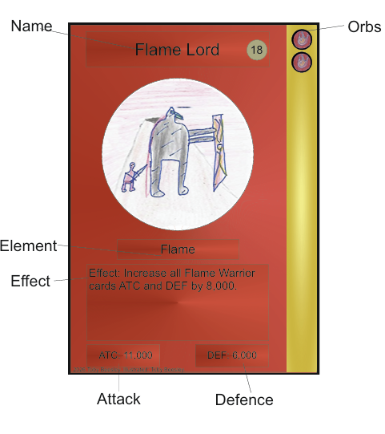

Keepers of the Mageia rules
Welcome to Keepers of the Mageia. This rule book will teach you the rules to the game.
What You Will Need
All you need is a 30–60 card deck, a General card and its corresponding General Upgrade card.
How to Win
To win you need to destroy each of your opponets general then send there general to the necropolis
Reading a card

Summoning
Orbs are a currency, every Orb has to be of a certain element, if you gain a non specified orb, you choose which element it becomes.
Every card has a orb cost, each orb on the right of the card shows how many orbs it cost,if you want to summon a card, you have to payits cost, by subtracting total orbs from the cost ofthe card. You have to pay the cost with the correct element orb.
At the start of every turn you gain one non-specifed orb.
On your general upgrade, there are a list on the right, each has a task, if you complete itthen you gain the specified orbs. The orbsare always the same element as the general.
The Field
There are 3 zones, as shown by this diagram when summoning a card, you can chose to summon it in either the offensive or defensive zone.
Attacking
If you have a card on the field you can target one card to attack, follow this flow chart. Two cards can combinded there ATC to attack one card.

Stages
When a card attacks a general it goes down a stage, which activates the effect of the stage, which is specified on the card. You can only take a general two stages every turn.

Key Terms
Necropolis: When a card is destroyed or discarded it goes there, the discard pile.
Poison: If a card has the poison effect, when it attacks or is attacked, the other card loses 2,000 DEF X the poison cards Orb Cost. If there is a Xx then multiply this result by that number.
Power up: A card with the power up ability can be placed under another card, if its cost is payed the cards ATC and DEF is added onto the power up card.
Faction: If a card has a faction, if a card names that faction it is effected that card. e.g Chief Of The Forest allows any forest warrior to gain poison, Knight Of The Forest would gain poison.
Tokens: When a card says it plays a token, use anything to show this creature. Follow the effect from the card to tell you the rules for the card.
Alternative rules
Snap: You can use these cards to play snap. To play snap shuffle your deck, then each player takes turns drawing a card and placing it on the pile, if the images are the same from the last card then the first player to say snap and place there hand on the pile, they win those cards, continue till all cards are claimed and then the person with the most cards win.
Teams: Devide into equal teams, the first team that loses one general loses the game.
Credits
Game by Toby Beesley, main playtester and sub-developer Emma Beesley. Thank you to anyone who has played and helped in the games development.